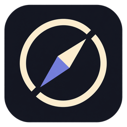

A little companion for understanding your codebase.
Authored source

Loading local assets…
Independently simplified 32px and 16px portraits included.
The catalogue is a design preview. App playback follows real activity and permission states. Reduced motion stays still; hidden and offscreen canvases pause. Manifest · Sources & compositions · All retained explorations